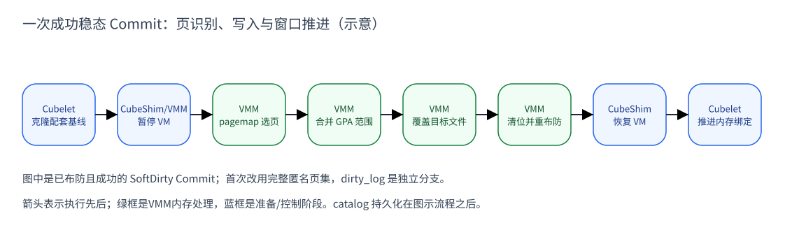

CubeSandbox 的快照怎样识别脏页：从恢复基线到下一次保存
内存快照把运行中的 RAM 内容保存为可恢复的状态。全量保存可以写出所有待保存 RAM；增量保存则要同时解决两件事：用一份完整基线提供未变化的字节，用选页 机制找出本次需要覆盖的部分。少写数据是保存过程的特点，不代表产物缺少数据。
本文让运行实例 A 从初始快照 S0 恢复，连续保存得到 S1、S2。S0/S1/S2 是 三个保存时点的快照名称；讨论内存时，具体指它们的内存镜像文件。A 始终是 同一个实例；后文的 B 才是从 S1 新建的另一实例。
本文先讲地址、页状态与跟踪窗口的关系，再沿一次 CubeSandbox 运行时 Commit 走完保存流程，最后用连续保存检验基线配对。节点管理组件 Cubelet 选基线， CubeShim 转交控制请求，VMM（宿主中的虚拟机管理程序）负责识别并写出 RAM。
| 版本 | 固定源码 | 大致时间（commit） |
|---|---|---|
| v0.5.1 | a164417f4972 | 2026-07 |
| v0.6.0 | 8721dd151971 | 2026-07 |
| v0.7.1（主要讲解基线） | 31d911e430fd | 2026-09 |
日期采用 commit 月份，不是发布日期。本文核对这三个版本的相关实现，未做运行实验。
1. 选页的基础：地址、基线与时间窗口
“脏”总是相对于某个参照而言。匿名页筛选描述的是当前页的类型，SoftDirty 描述的是跟踪窗口内的标记，KVM dirty log 则按内存槽提供位图。它们都可参与 决定保存范围，但不是同一个标志，也不能直接互换。E2、E3
保存算法还需要一份与所选集合配套的基线。例如只收集“上次保存以后”的变化， 目标就必须已经包含上次保存的内容；否则未被选中的较早变化会丢失。基线回答 “旧字节从哪里来”，选页集合回答“哪些位置需要新字节”，二者共同决定结果。E7
完整流程包含四类不同状态：RAM 范围表规定保存布局，页标记提供选页依据， 目标文件承接字节，Cubelet 的绑定记录下次可以使用哪个基线。它们分属不同 对象；清页标记不会修改文件内容，生成文件也不会自动替换所有上层绑定。 E1、E5、E7
地址把页状态连接到真正的字节
客户机中的程序访问虚拟地址，经客户机页表到达 GPA（客户机物理地址）。 VMM 为这段 RAM 建有宿主虚拟地址 HVA，KVM 用 memory slot 把 GPA 与 HVA 对应 起来。后面的扫描读取的是 VMM 进程的宿主页信息，不是客户机页表 dirty 位。
VMM 的 MemoryManager 先记录需要保存的 RAM 范围和原来的 memory-slot 布局，再用
get_host_address(GPA) 找到 HVA。设备映射与 RAM 保存视图有不同用途；不能
把整个 VMM 进程的地址空间、MMIO 区或所有设备内存都当作待保存 RAM。E1
文件偏移也不等于 GPA：多个 RAM 范围在内存镜像中顺序排列，MMIO 地址洞不会 自动变成同样大小的文件洞。后续选页合成 GPA 范围后，还要查原范围表，换算 它在镜像文件中的偏移，才能把字节写对位置。
代码从 MemoryManager::snapshot() 开始保存范围表；之后的 send() 使用
同一张表发送字节。进入匿名页筛选时，filter_memory_ranges_by_pagemap_anon
逐范围取 GPA，再调用 get_host_address，把 HVA 交给 get_anon_pages。
返回的是一组真假值，尚未写入快照文件。E1
2. 从宿主页信息形成保存集合
匿名页是由匿名内存承载的页。在本文的文件私有映射路径中，CoW 会产生这样的 私有副本；因此，保存匿名页可以捕获相对恢复文件已私有化的内容。但“匿名” 本身不记录何时、由谁写入，也不证明页中字节一定不同于基线。
SoftDirty 在这个集合上增加时间维度：先清标记并建立跟踪条件，随后观察哪些 页重新出现标记。CubeSandbox 的实现对驻留页取匿名页与软脏位的交集。因此 它并非每次比较两个完整文件，也没有保存逐条写操作的历史。E2、E3
Full、Incremental、SoftDirty 是这里的三种保存策略。Full 不依靠差异集合来 缩小写入范围；Incremental 用匿名页集合覆盖配套恢复基线；已布防 SoftDirty 进一步缩小到当前窗口。未布防时先保存完整匿名页集，避免把没有可靠起点的 标记误当成一轮有效变化。E3、E5
用连续两次保存看出两种集合的差别
先用六页示意：A 从 S0 恢复后写页2、页4，保存 S1；下个周期写页4、页5， 再保存 S2。这里假设文件私有映射、4 KiB 宿主页、没有 swap/映射重建或 prefault 导致的额外 CoW，而且写入能被选定机制观察到。
“页2/页4”是这六页从1开始的讲解编号，不是源码中的绝对页号。若某 RAM 范围 的 GPA 起点为 G，宿主页大小为 P，页4位于 G+3P；保存文件中的位置还要加上 该 RAM 范围之前各范围的累计长度。
Incremental 查询 /proc/self/pagemap，取出当前物理页号 PFN，再到
/proc/kpageflags 检查匿名页标记。文件私有映射被写后产生的匿名副本是它要
保存的集合，所以第二周期仍包含页2、页4、页5。这是一种内存状态判定，
不是逐笔记录业务写操作的日志。E2
具体读法是：用 HVA/P 找到宿主页索引，乘8定位 pagemap 的64位条目；如果页 已驻留，再以条目中的 PFN 乘8读取 kpageflags，检查 KPF_ANON。换出页直接 保守计入，未驻留且未换出的页跳过，读取失败或可见PFN为零则返回错误。
SoftDirty 另读 pagemap bit 55，再与匿名页集合取交集。本例的有效窗口从 S1 保存后开始，第二周期只选页4、页5。Full 则保存所有选定 RAM 范围。启用 dirty log 时，VMM 会先合并 KVM 位图与 VMM 软件位图，提前返回；这不是第四个 SnapshotType，也不走本文的 anon/SoftDirty 选页分支。E3
两个扫描器都保守纳入换出页。对 resident 页，匿名页扫描还依赖可读取 PFN 和 kpageflags 的权限；PFN 不可见可返回错误。不能把权限缺失解释成“没有脏页”， 更不能先得到空集合，再宣称快照不需要写。
3. 跟踪窗口的生命周期
一个有效窗口需要明确的起点。对 SoftDirty 来说，起点不是“收到快照请求”， 而是上一次成功清位、建立后续写入跟踪条件的时刻。读取标记得到本轮集合， 写出后重新布防，下一轮才有新的时间参照。
写“4”到 /proc/self/clear_refs 是布防。Linux 6.6 对通常的未被 DMA pin 的
present PTE，会清软脏位并写保护；之后的写缺页可恢复可写属性并置位。
它改的是页表标记，没有把 RAM 变回 S0，也没有删除已经产生的匿名副本。E4
因此，同一匿名页可以在多个周期反复被识别为 anon，却只在某个周期带软脏位。 清位范围是当前进程，VMM 随后只扫描自己的 RAM 范围。新建或扩展映射可能带 标记，pinned/特殊页有独立处理；不能把 bit 55 当成“所有 guest/DMA 写入已被 完整观察”的证明。
新 MemoryManager 从 armed=false 开始。第一次收到 SoftDirty 请求，先按
完整匿名页集保存，再 probe 并布防；后续成功周期才写交集并重布防。
写完后的 clear 失败只解除布防，下一次回到匿名页集。这个布防状态不会作为
一个有效跨 Sandbox 窗口传给从 S1 新建的 B。E5
4. 代码流程：把选页集合写成一份完整快照
前面得到的是“要保存哪些位置”的规则；执行保存还必须协调运行状态、目标 文件和字节写入。普通增量 Commit 先准备完整基线的克隆，再暂停 VM、记录 布局、筛选并覆盖字节，最后恢复运行并推进上层绑定。E6、E7
Cubelet 为 Commit 选择配套基线和类型；cube-runtime 的 app snapshot 路径 由 CubeShim 依次请求暂停、快照和恢复。VMM 的 pause 调用 CPU 与设备管理器， snapshot 检查 VM 必须已是 Paused，然后记录状态与 RAM 范围。E6
入口是 prepareCommitMemoryArtifact 返回目标内存对象与类型；
executeCubeRuntimeSnapshot 把它们变成 --memory-vol 和 --snapshot-type
参数。CubeShim 的 do_app_snapshot 先暂停，执行保存与元数据写入后再尝试
resume；保存错误与resume错误分别处理，两个步骤都成功才返回成功。
在 VMM 内，选页完成后会把相邻页合并成 GPA 范围。save_range_to_file
按换算出的文件偏移定位，循环调用内存写出接口，直到这个范围的字节都写完。
因此“选中了页4/5”只确定处理范围，接下来仍可能在打开或写入目标时失败。
看图中的一次成功稳态 Commit：基线文件先准备好，暂停后扫描页；连续选中页 合成范围，再叠写到目标文件。SoftDirty 清位建立下一窗口后，调用方恢复 VM， Cubelet 在捕获调用成功后推进 runtime-snapshot 绑定。

图 1：固定源码流程示意，省略 rootfs、完整设备状态和失败清理。首次 SoftDirty 走匿名页集，dirty_log 是独立分支。证据：E1、E5、E6。 框间箭头表示一次成功调用的执行先后；绿色框是VMM的RAM处理，蓝色框是准备 和控制阶段。最右两框分别属于CubeShim恢复运行、Cubelet更新内存中的绑定， 并不包含随后catalog的持久化。
S1 的内存文件仍是完整镜像：未选中的字节由基线克隆保留。保存范围表用于 定位，脏页集合用于决定本次覆盖哪些字节；不能把本次少写的范围当成恢复时 要重放的差分链。
5. 应用原理：连续保存时，为什么需要两个基线绑定
A 的“最近恢复”绑定保持 S0，“上一快照”在捕获 S1 成功后推进到 S1。 接着保存 S2 时，S1 配本轮页4/5；若 S1 不可解析，就用 S0 配累计页2/4/5。 类型和基线必须一起选择，否则页2的新值没有来源。
v0.5.1/v0.6.0 保留三层选择；v0.7.1 还可用符合恢复身份条件的 S3 导入卷 作 Incremental 基线，最后才 Full。Commit 推进上一快照，Create/恢复及 Rollback 更新最近恢复。普通 Commit 不重建 VM，所以 anon 集合不会因它清零。E7
这些绑定不是完整的持久性凭据：v0.7.1 在捕获调用成功后先改内存中的绑定， 再做后续步骤；写本地 catalog 失败只记警告。捕获、恢复运行、绑定推进、 catalog 持久化是不同完成点，不能只看一个标签或成功响应就断言全快照已持久化。
6. 机制边界与版本变化
v0.6.0 把 anon/SoftDirty 扫描从固定 4096 改成宿主页大小；v0.7.1 的 probe 先写测试页并读回 bit 55，确认后才清位。核心周期状态机保持不变。 探测失败可退回 anon 路径，但过滤、打开文件和写入的错误并不会全部被吞掉。
prefault 可提前触发私有页分配；新映射、swap、DMA pin、共享内存和 virtio-mem 又各有条件。本文未验证这些组合的完整保存/恢复结果、失败后的多周期一致性 或并发请求竞态。暂停 VM 也不是客户机数据库的事务提交协议。 本文也未在 64 KiB 宿主页环境运行验证选页、范围合并与恢复闭环。 版本变化细节见 SoftDirty 演进。
继续拆开看：磁盘内存如何恢复与运行时 CoW、 XFS/reflink 如何保存内存卷。 KVM slot与位图接口的基础流程见 KVM内存机制。
源码证据
E1 · RAM 范围与文件定位（local fact）
v0.7.1
E2 · anon 识别与权限（local fact）
E3 · 交集与优先分支（local fact）
v0.7.1
dirty_log 优先与类型分派
E4 · 系统层布防（Linux v6.6 固定辅助源码，不是宿主验证）
E5 · 生命周期与状态机（local fact；页例为 inference）
初始 false
首次保存/重布防
E6 · 暂停、捕获与恢复（local fact）
v0.7.1